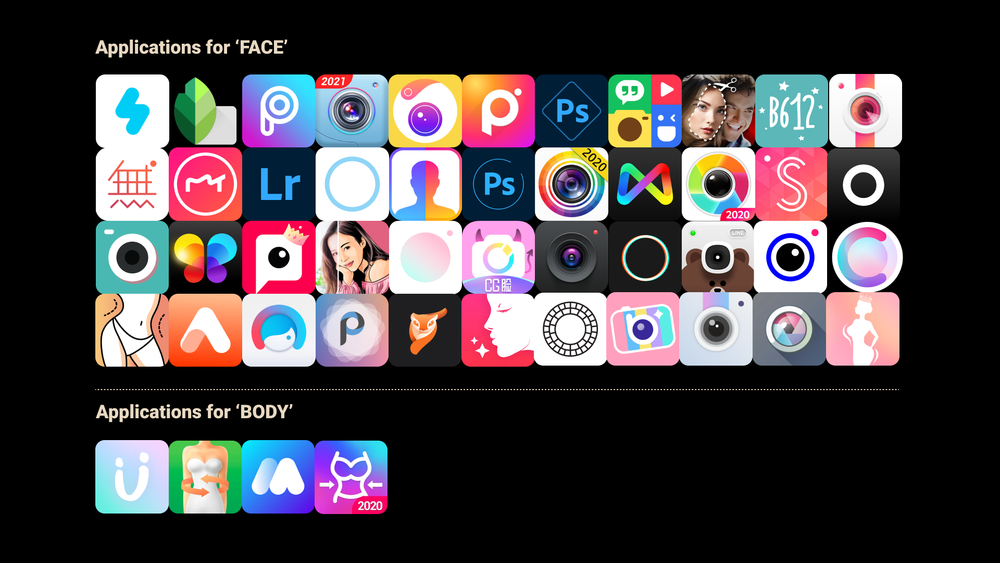
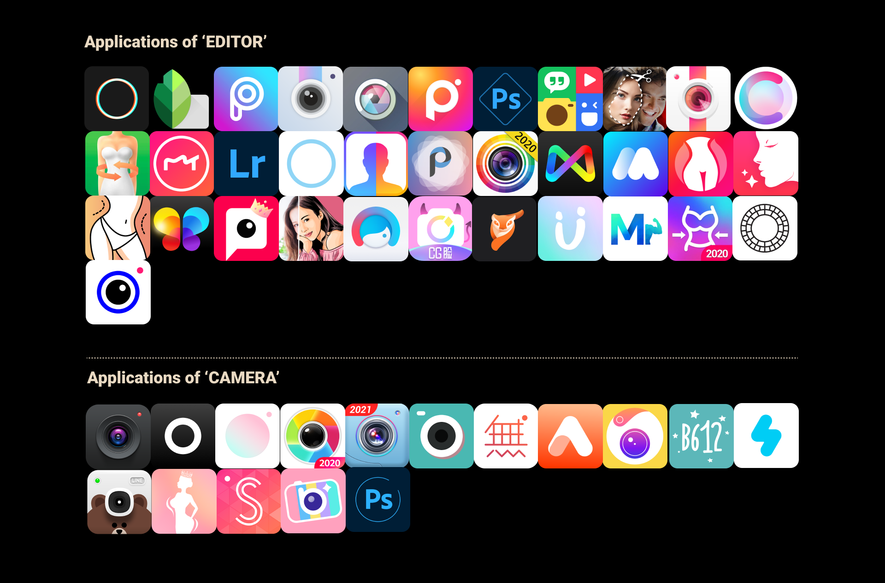
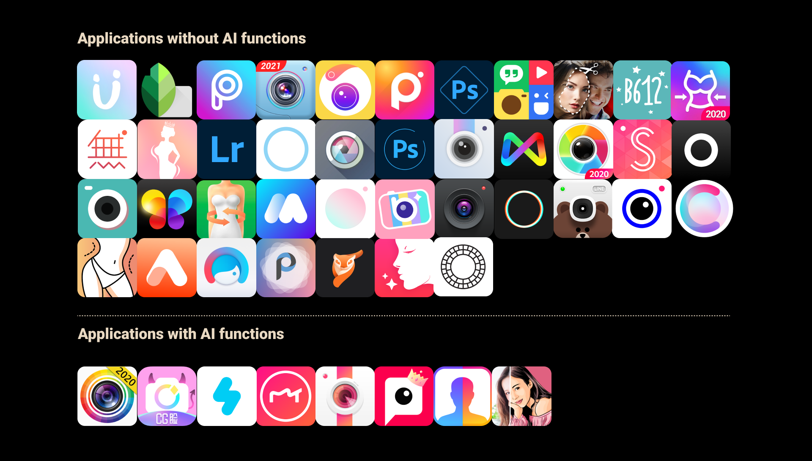

{kind=link}

We summarize and compare the 50 most popular apps on Google Play to see the core capabilities, downloads and scores of photo editing apps. It also provides a reference for users’ needs and likes based on the data of apps’ evaluations.
Among the 50 applications in the statistics, we found that more photography applications are used to edit faces (some of them have fuzzy functions, which can edit faces and bodies), but they are only used to edit faces There are only 6 applications in the Ministry. We speculate that there is more demand for changing faces among users, and people pay more attention to facial beauty.
Among the 50 apps in the statistics, we found that the apps that change the face have more downloads and better ratings. We speculate that applications that change the face will become more popular
Among the 50 applications in the statistics, we found that there are more editing applications than taking pictures.
In the statistics of 50 applications, we found that the main application of camera ability is mainly used to change the face, and there are basically no applications that change the body while taking pictures.
Among the 50 applications of statistics, we found that applications with AI algorithm capabilities are usually used to change people's faces, but the AI algorithm for bodies does not appear.
Overall, the most popular thing in the market now is to change people's faces through editing. The download of this type of application is also the most.